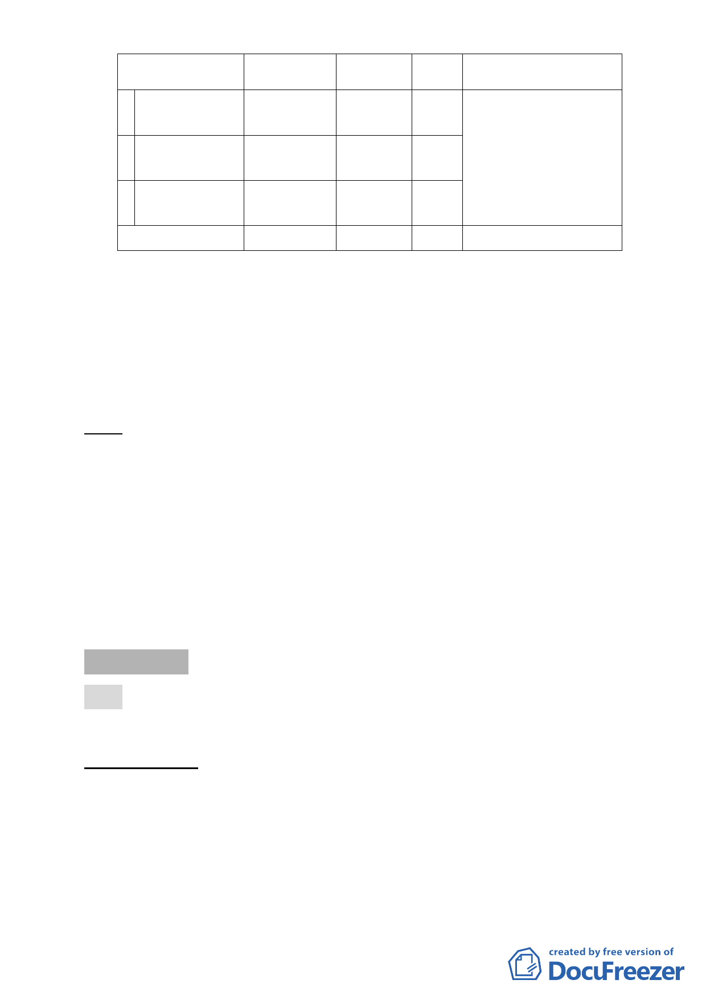

變更位置
原計畫 新計畫
2
機場北側及西
側，共4 處。
農業區
機場用地
3
機場西側，共1
處。
污水處理場
用地
機場用地
4
機場西側，共1
處。
道路用地
機場用地
合計
面積
（ha）
變更理由
足，及現有進場燈光易受
1.71 人 為阻擋 ，影響 飛安甚
鉅，為符合國際民航公約
1.65 第十四附約規定，設置跑
道地帶、跑道端安全區、
0.74
進場燈區，以提升松山機
場飛航服務安全。
4.18
四、 全案係市府102年9月10日府都規字第10236693000號公告公
開展覽並函送到會。
五、 公民或團體所提意見：計19 件。
六、 申請單位：臺北市政府。
七、 法令依據：都市計畫法第27條第1項第3、4款辦理。
決議：本案計畫內容因涉飛航安全、交通部對松山機場中長期發
展計畫、以及本市對松山機場週邊整體規劃等議題，爰籌
組專案小組討論整合各方意見，請羅委員孝賢擔任召集
人，專案小組成員歡迎有興趣的委員加入(經徵詢委員意
見，專案小組成員包括黃委員世孟、黃委員台生、張委員
桂林、許委員俊美、陳委員春銅、王委員聲威、吳委員盛
忠、陳委員盈蓉、張委員培義等)。
審議事項 二
案名：修訂臺北市中山區長安段三小段 124 地號等 26 筆土地第三
種商業區（特）土地使用分區管制細部計畫案
案情概要說明：
一、計畫位置：
位於建國北路一段以西、長安東路二段以北、長安東路二段
129 巷以東及建國北路一段 78 巷以南所圍街廓內，面積為
2,323 平方公尺。
二、計畫緣起
-4-